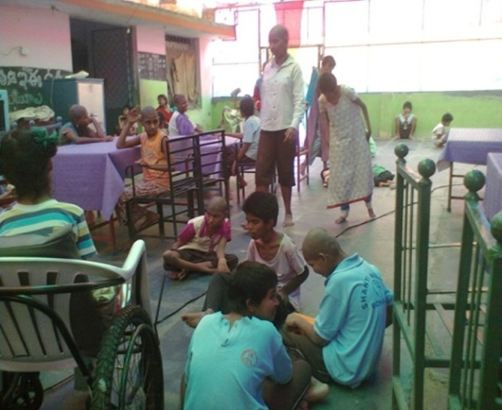
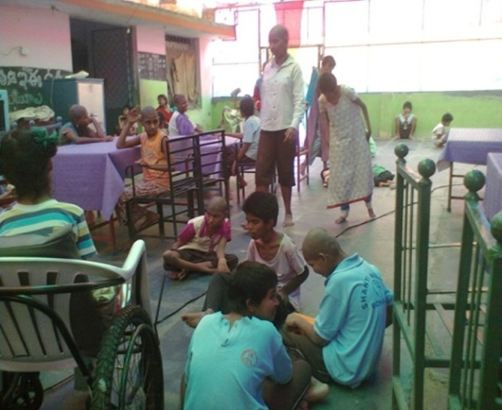
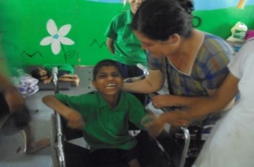
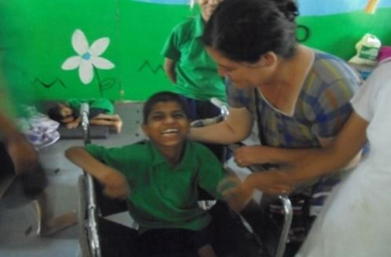

Lanaja, es un pueblo solidario con Misión Esperanza. El grupo de papel solidario y la comunidad se comprometen con algunos proyectos que benefician a la personas más necesitadas: comedores, becas… que la fundación apoya en países de América, Centro América y la India.
 

 
